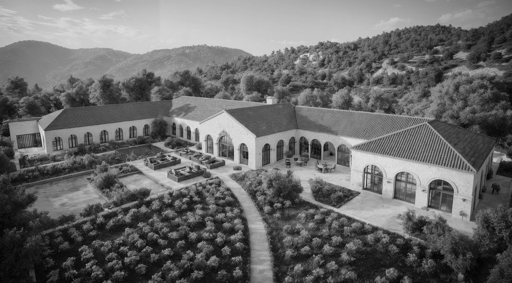
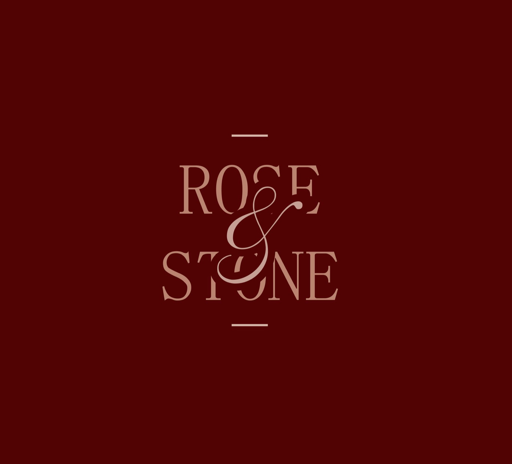
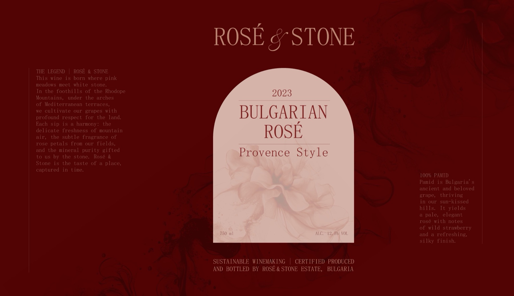
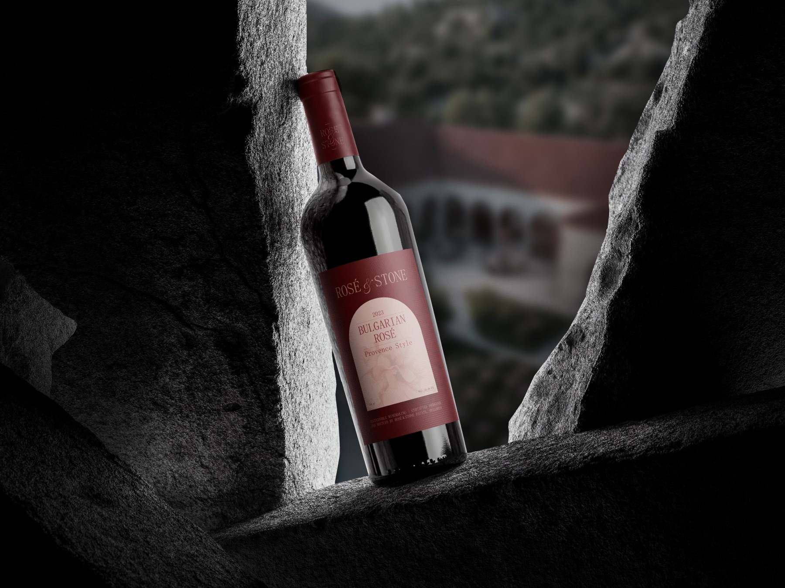
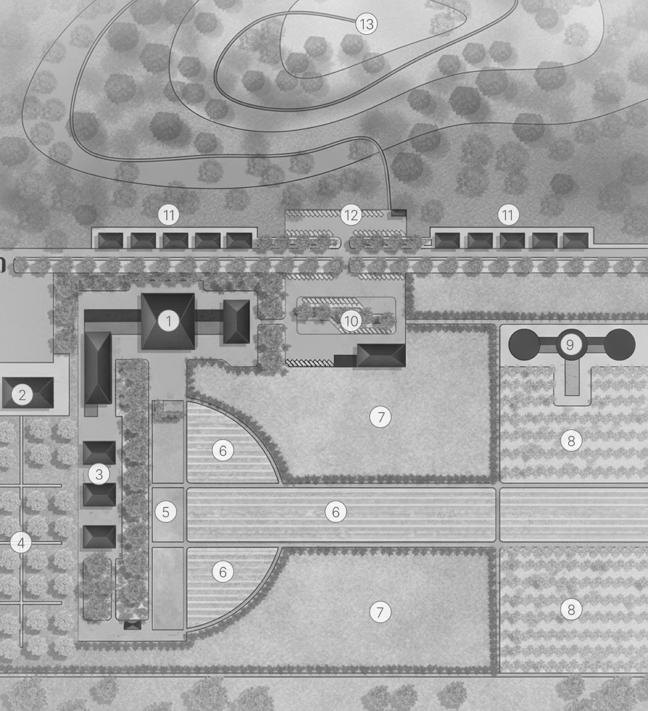
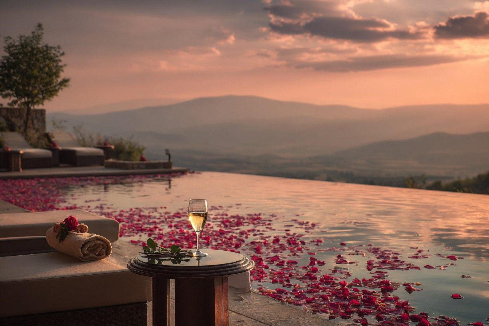
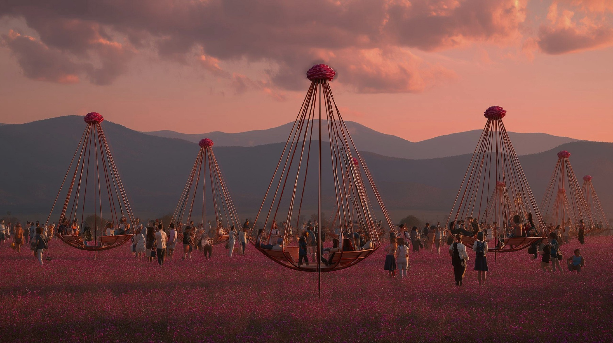

Rosé & Stone
Туристический кластер

О проекте
Туристический кластер в сердце Болгарской Долины роз, где среди гор на 40 гектарах сходятся винодельня, бутик-отель и ресторан в элегантном средиземноморском стиле с белым камнем и арками. Обширные виноградники, розовые и лавандовые поля дополняют картину премиального отдыха.
Задача
Комплексная разработка кластера и рост узнаваемости региона: от мастер-плана и сценариев пользования до фирменного стиля, легенды и вывода на рынок собственного вина.
Главный вызов
Регион с сильной идентичностью — Долина роз — оставался малоизвестен за пределами Болгарии. Требовалось собрать разрозненные функции (винодельня, отель, ресторан, поля) в единую историю, которая работает и как туристический продукт, и как инвестиционный кейс.
- 40 га
- площадь кластера
- +22%
- узнаваемость региона
- 3
- функции в одном кластере
Бренд



Место



Результат
Проект одобрен к реализации, узнаваемость региона выросла на 22%, усилена культура и привлечены инвестиционные потоки. Открытие кластера и запуск брендированного вина станут двойным событием, объединившим старт территории и фестиваль.
Решение
Название родилось из местной легенды о союзе прочного горного духа, воплощённого в камне, и нежной души розы, подарившей ему свою целебную слезу. История переходит в архитектуру, где белый камень служит основой, а розовые поля наполняют территорию жизнью и ароматом. Легенда развёрнута в зонировании, сценариях пользования, фирменном стиле и этикетке вина.
Объём работ
- Мастер-план
- Зонирование
- Нейминг
- Стратегия
- Брендинг
- Упаковка проекта